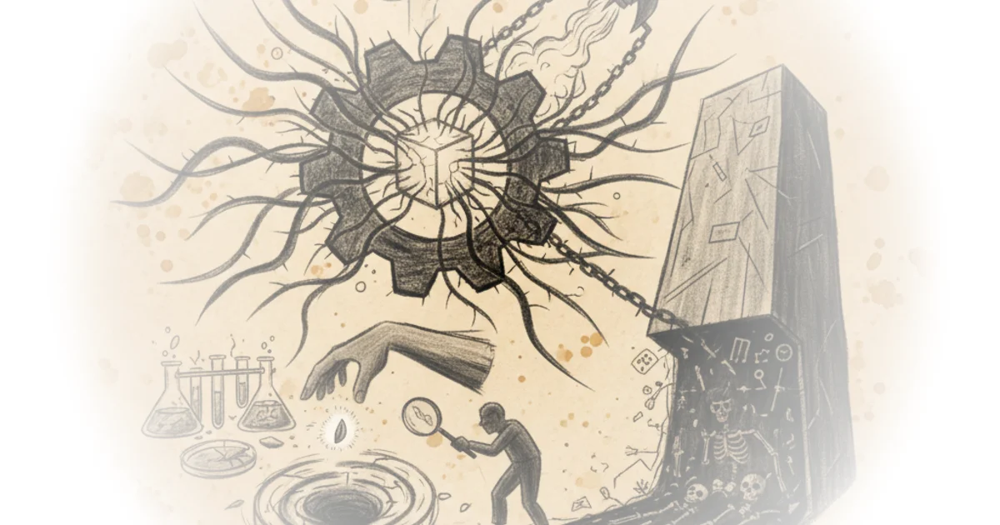

Could AI slow science? Arvind Narayanan & Sayash Kapoor · AI Snake Oil ·Jul 16, 2025 · 33 min read · AI & Tech 
The Weirdest Paradox in Medicine Rohin Francis · Medlife Crisis ·Jul 16, 2025 · 18 min read · Public Health
Jim Hewitt and Nidhi Sachdeva: Reframing teaching as a science-based profession Robert Pondiscio · The Next 30 Years ·Jul 16, 2025 · 11 min read · Economics
Are The Fundamental Constants Finely Tuned? Matt O'Dowd · PBS Space Time ·Jun 26, 2025 · 15 min read · Philosophy
A billion years of evolution in a single afternoon — George Church Dwarkesh Patel · Dwarkesh Patel ·Jun 26, 2025 · 79 min read
David Hume and the Aristocracy of Inclination Eric Topol · Ground Truths ·Jun 22, 2025 · 11 min read · Public Health
How AI is Ruining the Electric Grid Sam Denby · Wendover Productions ·Jun 19, 2025 · 22 min read · AI & Tech
The Crisis In Physics: Are We Missing 17 Layers of Reality? Matt O'Dowd · PBS Space Time ·Jun 12, 2025 · 15 min read
The talk I almost didn't give in Washington BobbyBroccoli · BobbyBroccoli ·May 23, 2025 · 23 min read
Why This Nobel Prize Winner Thinks Quantum Mechanics is Nonsense Sabine Hossenfelder · Sabine Hossenfelder ·May 18, 2025 · 12 min read · Philosophy
Is There A Simple Solution To The Fermi Paradox? Matt O'Dowd · PBS Space Time ·May 15, 2025 · 16 min read
AGI is not a milestone Arvind Narayanan & Sayash Kapoor · AI Snake Oil ·May 1, 2025 · 24 min read · AI & Tech
How a Student's Question Saved This NYC Skyscraper Derek Muller · Veritasium ·Apr 26, 2025 · 29 min read
How a One-in-a-Billion Mistake Made the Universe Possible Matt O'Dowd · PBS Space Time ·Apr 17, 2025 · 13 min read
AI as Normal Technology Arvind Narayanan & Sayash Kapoor · AI Snake Oil ·Apr 15, 2025 · 90 min read · AI & Tech